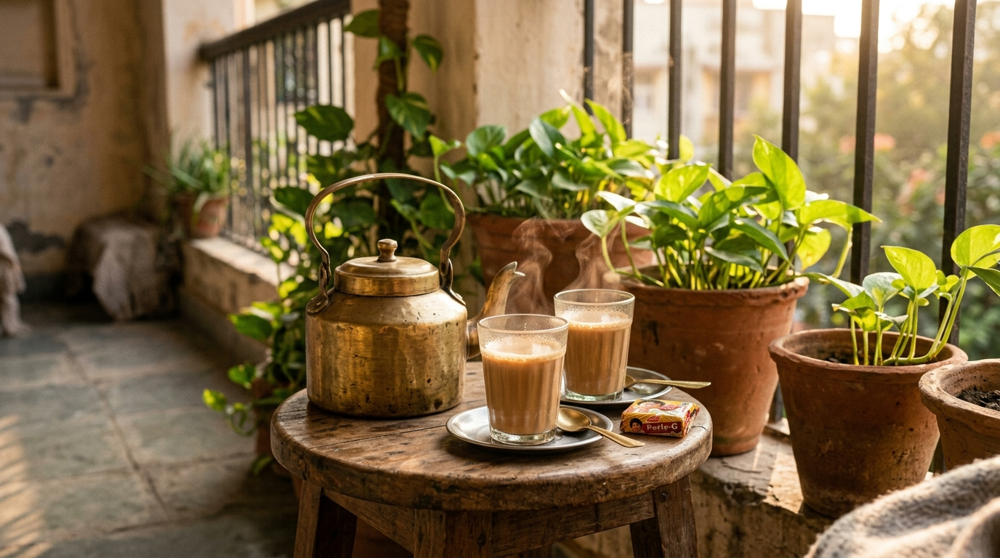

"Every balcony in an Indian apartment begins life with noble poetry in its heart. You sign the rent agreement, stand on the bare floor tiles, gaze into the distance, and imagine yourself living inside a high-end tea commercial. You picture gentle morning breezes, soft classical music, and yourself holding a porcelain cup, pondering the mysteries of the universe."
Then, life happens.
The Tragic Destiny of the Indian Balcony
Within three short weeks of moving in, the romantic European dream collapses under the sheer weight of domestic practicality.
First comes the drying rack—a sprawling steel octopus that unfolds its metal wings across the narrow passage, proudly displaying eighteen damp school socks, three faded kitchen towels, and a bedsheet that acts like an international border wall blocking all sunlight. Next arrives the plastic bucket that lost its metal handle during the monsoon of 2021. Nobody throws it away because "it is still good for washing the floor."
Beside the bucket sits an abandoned cardboard Amazon carton. Inside that carton is another smaller cardboard carton. Why? Nobody knows. Our mothers hold a sacred belief that an empty cardboard box is a treasure that must be preserved for future generations, like gold jewellery or fixed deposit certificates.
And finally, there are the true rulers of the balcony: the neighborhood pigeons.
Pigeons do not treat your balcony like an apartment amenity. They treat it like ancestral agricultural land passed down by their great-grandfathers. They strut across the railing with their chests puffed out, hands folded behind their feathered backs like retired municipal commissioners inspecting illegal construction. They look through your glass window with unblinking, judgemental eyes that seem to say: "Who gave you permission to stand near our air-conditioner compressor?"
And so, the four-by-six balcony—the only patch of open sky you pay hard-earned money for each month—surrenders completely. It becomes a dumping ground where dreams of fresh air go to die.
Today, my friends, we put an end to this tragic comedy. We are going to reclaim those twenty-four square feet. And we are going to do it for less than the cost of one disappointing meal at a pretentious cafe: exactly fifteen hundred rupees.
“You do not need a palace lawn or a penthouse in Mumbai to touch peace. You only need four square feet of your own, two green leaves, and a glass of hot tea held in quiet hands.”
Act I: The Grand Eviction Treaty (Cost: ₹0)
Before you spend a single rupee, you must stage a non-violent domestic revolution. Put on an old T-shirt, make a strong cup of black coffee or tea, and prepare your diplomatic arguments.
Walk into the living room and announce with polite authority that the drying rack is being relocated to the utility area or folded against the interior wall during mornings. The broken plastic bucket must be moved behind the washing machine. The nested Amazon cardboard boxes must be flattened and surrendered to the newspaper kabadiwala.
Now, take a bucket of warm water, add two capfuls of floor cleaner (preferably citronella or pine), and scrub the tiles down to their original color. Wipe the railing until the black dust disappears.
Stand back and take a deep breath.
Notice something astonishing? Just by clearing away the clutter and washing the floor, the space feels instantly three times bigger. The sky looks clearer. The breeze actually smells like morning. You haven’t spent a single paisa, yet half the battle is already won.
Act II: The Ancient Magic of Sitting Close to the Earth (Cost: ₹450)
The biggest mistake people make with small balconies is dragging heavy plastic furniture outside.
If you place two bulky garden chairs and a round plastic table inside a four-by-six balcony, your balcony is officially finished. You have created an obstacle course. Every time you step outside, your kneecap crashes into the armrest, your elbow knocks over the tea, and you spend the whole time feeling like a passenger trapped inside an economy airplane bathroom.
The secret to turning a small balcony into a palace is simple: sit on the floor.
In Indian tradition, sitting close to the floor has always been an art form. When you sit on the floor, an optical illusion occurs: the ceiling vanishes, the iron railing feels tall and protective like a fort, and the vast open sky expands above your head.
- A Traditional Cotton Durrie (₹200): Head down to your nearest weekly street market (the Sunday bazaar or local handloom stall) and buy a 3x5 foot flat-woven cotton dhurrie. Look for earth tones—mustard yellow, terracotta red, or warm ivory. It is breathable, easy to shake clean, and feels wonderfully cool under bare feet.
- One Thick Cotton Floor Cushion / Gaddi (₹250): Skip expensive branded foam cushions. Visit the local cotton-quilting shop (the rooi wale uncle) or buy a thick tufted cotton floor pillow from Meesho or a local bazaar. It provides firm lower-back support and begs you to sit cross-legged for hours.

Act III: The Highway Nursery Heist (Cost: ₹330)
An aesthetic corner without plants is like a samosa without potatoes: technically food, but spiritually empty.
However, please heed this urgent warning: Do not buy plants from fancy air-conditioned lifestyle stores. Those boutique lifestyle shops will put a three-inch fern inside a gold-painted ceramic pot, stick a label on it that says "Artisan Botanical Collection," and demand ₹850. That plant has an inflated ego and will dramatically wither the moment you look at it wrong.
Instead, take your scooter or walk to the humble roadside nursery on the corner of the highway—the place where an uncle in rubber chappals sits under a green shade net, watering rows of black plastic sapling bags with an old hose.
Here is your foolproof shopping list for ₹330:
- The Immortal Money Plant (Pothos) — ₹60: The undisputed champion of Indian households. A money plant can survive hot Indian summers, cold winters, and owners who forget to water it because they were busy binge-watching cricket matches.
- The Snake Plant (Sansevieria) — ₹80: Often called "Mother-in-Law’s Tongue." It looks like an expensive architectural sculpture, releases fresh oxygen through the night, and thrives on utter neglect. If you ignore it for ten days, it actually thanks you.
- The Sacred Tulsi or Lemongrass — ₹40: Beautiful scent, sacred energy, and an immediate culinary supply. Whenever your tea is bubbling on the stove, you simply step outside, pluck two fresh leaves, and toss them into the boiling water.
- Three Real Terracotta Pots (₹150 total, ₹50 each): Avoid cheap plastic pots. Clay pots breathe. And whenever you pour water into unglazed terracotta, that magical wet-earth scent—petrichor, or the smell of first monsoon rain—rises into the morning air. No scented candle in Paris can compete with it.
Act IV: The Table That Isn’t Really a Table (Cost: ₹150)
Now, where do you set your tea down?
You do not need a mahogany side table. In fact, an ornate table would ruin the relaxed, unpretentious spirit of our corner.
Walk over to your neighborhood fruit vendor or vegetable shop and ask if they have a sturdy wooden fruit crate. If you smile and ask nicely, they might give it to you for fifty rupees or even for free. Bring it home, scrub it with soapy water, give it a five-minute sanding with a piece of rough sandpaper (₹10 from any hardware store), and turn it upside down.
Voila! You now possess a "Rustic Weathered Cedar Coffee Table" that interior designers in South Delhi charge ₹4,000 to replicate.
Alternatively, buy a simple low wooden stool (a traditional chowki) from the local market for ₹120 to ₹150.
To complete the mood, spend ₹60 on two classic cutting chai glasses with ribbed sides from a crockery stall, and serve them with a small brass or stainless steel saucer. Place a five-rupee packet of yellow Parle-G biscuits next to it. You are now officially living in luxury.
Act V: The Golden Hour Fairy Light Secret (Cost: ₹180)
A morning chai corner is glorious, but an evening chai corner under the stars is pure magic.
Here is the single most important design rule in this entire guide: Never, under any circumstances, turn on a white tube light or cool white LED bulb on a balcony.
Cool white tube lights make your balcony look like an autopsy room in an Indian crime thriller. It attracts every wandering mosquito from three kilometers away, casts harsh shadows on your face, and ruins any chance of romance or peace.
Go to any local electrical shop or Meesho and purchase a five-meter string of warm white copper-wire fairy lights (2700 Kelvin warm yellow light) for ₹180. Weave the thin wire loosely along the top bar of your balcony railing.
When twilight arrives and the streetlights flicker on across the city, you turn off the main room lights and switch on the fairy lights. Suddenly, the harsh concrete vanishes. The leaves of your money plant cast dancing shadows against the wall. The entire balcony begins to glow with the golden warmth of a hill station retreat in Shimla.
Act VI: The Pigeon Peace Treaty (Cost: ₹80)
Now comes the delicate matter of the resident landlords: the pigeons.
We are peaceful citizens. We do not wish harm upon any creature. But we also do not wish our freshly washed cotton durrie to become a target for aerial bombardments.
The secret to outsmarting pigeons lies in understanding their psychology. Pigeons are cautious, suspicious creatures who hate two things: unpredictable motion and light reflections.
How to Protect Your Haven for ₹80
Take two old music or movie CDs from your school days (or buy a small brass wind chime from the market for ₹80). Tie them with fishing line or thin thread to the outer corners of your railing so they swing freely in the wind.
When the afternoon sun hits the spinning CDs, they cast flashing glares of light that look terrifying to a pigeon's eyes. Meanwhile, the faint tinkling sound of the brass wind chime tells them the territory is occupied by alert humans. Within two days, the pigeons will decide your balcony has too much drama and move over to Mr. Sharma's air-conditioner ledge next door.
The Complete ₹1,500 Budget Breakdown
Let us put emotion aside and look at the hard, honest numbers. Here is the exact shopping receipt for your complete balcony makeover:
| Item Description | Where to Buy | Honest Cost |
|---|---|---|
| Handwoven cotton durrie / floor mat (3x5 ft) | Weekly Sunday bazaar / street stall | ₹200 |
| Thick cotton floor cushion (tufted gaddi) | Local cotton quilt shop / Meesho | ₹250 |
| 3 unglazed terracotta clay pots (medium) | Local roadside nursery / pot potter | ₹150 |
| 3 resilient plants (Money plant, Snake plant, Tulsi) | Roadside highway nursery | ₹180 |
| Warm white fairy lights (5-meter copper wire) | Local electrical store / online | ₹180 |
| Low wooden crate or stool (chowki) | Vegetable vendor / home repurpose | ₹150 |
| 2 cutting chai glasses + brass/steel saucer | Local crockery shop | ₹60 |
| Reflective wind chime / pigeon deterrent | Local gift shop / old CDs at home | ₹80 |
| Reserve: Fresh ginger, cardamom & Parle-G | Neighborhood kirana store | ₹50 |
| GRAND TOTAL | — | ₹1,300 – ₹1,500 |
Think about that for a moment. For less than the price of one single cinema ticket with salted popcorn and a watery soda, you have permanently transformed the most neglected corner of your home into an everyday paradise.
The First Morning: In Defense of the 7:00 AM Sip
Let me tell you what happens on the morning after you finish setting this up.
You wake up at 6:45 AM. The house is completely quiet. The ceiling fans are still spinning lazily in the bedrooms, and the rest of your family is still buried under blankets.
You walk into the kitchen on tiptoe. You crush a small thumb of fresh ginger in the stone mortar with a satisfying thump-thump-thump. You crack open two green cardamom pods. You set water to boil in a small stainless steel saucepan, add loose black tea leaves, spoon in sugar, and let the milk simmer until it rises in a frothy, fragrant golden foam.
You pour the steaming tea through the fine mesh strainer into your cutting chai glass.
You slide open the balcony door. The cool morning air brushes against your face. You sit cross-legged on the clean cotton durrie, pull the floor cushion behind your back, and rest the warm glass in your palms.
Down below in the colony street, the milk delivery scooter putters by with its familiar morning rattle. A flock of green parakeets swoops across the pale blue sky. The soil in your terracotta pots smells rich and earthy. And as you lift the glass to take your first hot, spicy sip, a wave of pure, uncomplicated stillness washes through your chest.
Nobody is asking you for reports. Nobody is tagging you in emails. Nobody is arguing on social media.
In this tiny corner, time has stopped running. You own the sky, you own the morning, and the world is good.
Frequently Asked Balcony Questions
Written by Gurdeep Sidhu
Creator of Sidhu's Views. Passionate about slow living, mindful Indian home spaces, budget design, and finding extraordinary stories in the most ordinary corners of daily life.